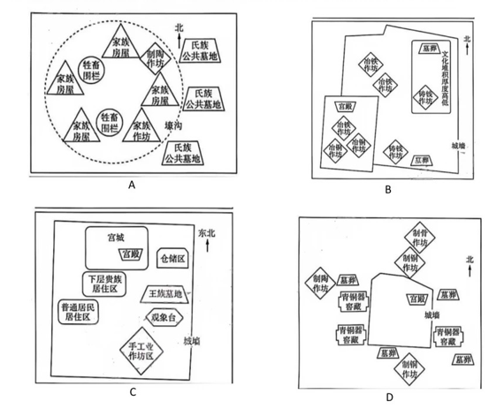
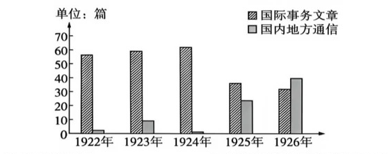

（全卷共20题，满分100分）
注意事项：
1. 答卷前，考生务必将自己的姓名、考生号等填写在答题卡上。
2. 回答选择题时，选出每小题答案后，用铅笔把答题卡上对应题目的答案标号涂黑。如需改动，用橡皮擦干净后，再选涂其他答案标号。回答非选择题时，将答案写在答题卡上。写在本试卷上无效。
3. 考试结束后，将本试卷和答题卡一并交回。
1. 下列各项为黄河流域不同时期的古代遗址示意图，其中与陶寺遗址特征相符的是（ ）

【答案】C
考查知识点：黄河流域新石器时代晚期龙山文化代表性遗址——陶寺遗址的社会形态与聚落特征。
正确选项分析：陶寺遗址（距今约4300—3900年，位于山西襄汾）已出现城墙、观象台、宫殿基址、手工业作坊区和普通居民居住区等功能分区，表明社会分化明显，已进入早期国家或酋邦阶段。选项C的示意图明确标注了“城墙”“观象台”“手工业作坊区”“普通居民居住区”，与陶寺遗址特征高度吻合，故选C。
干扰项排除：A项仅有家族房屋、氏族公共墓地，属于仰韶文化半坡类型等氏族公社时期，无城墙和宫殿，时间早于陶寺。B项虽有“宫殿”但仍有“氏族公共墓地”且无城墙、观象台，反映的社会分化程度不如陶寺典型。D项虽有宫殿和城墙，但缺乏观象台且仍保留氏族墓地，不符合陶寺作为区域性中心聚落的完整特征。
教材补充（统编版《中外历史纲要（上）》第1课）：陶寺遗址位于山西襄汾，距今约4300—4000年，属于新石器时代晚期。遗址中发现规模空前的城址、宫城、宫殿建筑、观象台及等级分明的墓葬（大型墓不足1%，随葬品丰富；小墓则极少随葬品），表明当时已出现明显的阶级分化，具备了国家的初始形态。考古学家推测其可能与“尧都”有关，是探索中华文明起源的核心遗址之一，印证了黄河流域是中华文明的重要源头。
2. 550年，北齐渡淮讨伐侯景，“凡诸货物，一毫无犯，唯大收典籍”。南朝梁简文帝之子萧大入北周为官，在麟趾殿校书时，发现秘阁所藏《梁武帝集》四十卷、《简文集》九十卷，遂对这两部孤本进行精心整理。这些行为客观上
【释义】“凡诸货物，一毫无犯，唯大收典籍”意为：对各类财物丝毫不加侵犯，只是大量收集典籍。
【答案】D
考查知识点：南北朝时期的典籍保存与南北文化交流。
正确选项分析：北齐南侵时专门收集南朝典籍，梁朝皇族萧大又在北周校理梁朝帝王文集。这些做法客观上使南方文化典籍得以保存并传入北方，为隋唐时期南北文化融合与新文化发展提供了契机，故选D。
干扰项排除：A项“儒学复兴运动”主要出现在中唐以后（韩愈等），时间不符；B项“崇文抑武”是宋代的基本国策，与南北朝无关；C项“消弭”说法过于绝对，仅凭收集典籍不能完全消除思想隔阂。
3. 唐朝太史局“每年预选来岁历，颁于天下”。吐蕃番出土的天宝十三载（754年）文书记录，当年西州在没有收到正月、二月历日的情况下，按照小月支出马料，收到历日后发现都是大月，便又补给了两日马料。这可以印证
【释义】“每年预选来岁历，颁于天下”意为：太史局每年预先推算下一年的历日（日历），颁布给全国各地。
【答案】B
考查知识点：唐代对西域的有效管辖与历法颁行。
正确选项分析：西州（今新疆吐鲁番一带）在没有收到朝廷历日时，先按小月支马料，收到历日后发现应为大月，又补给了两日马料。这说明西州地方行政严格遵循唐朝中央颁行的历法，体现了唐朝对西域的有效行政管辖，故选B。
干扰项排除：A项安史之乱爆发于755年，而材料时间是754年，尚未发生，排除；C项材料未涉及吐蕃和茶马贸易；D项材料仅涉及历日使用，并未体现天文历法技术本身取得突破。
4. 1207年，金章宗下诏：“民间之交易、典质，一贯以上并用交钞，毋得用钱。须立契者，三分之一用诸物。六盘山西、辽河东以五分之一用钞，东鄙屯田户以六分之一用钞。”这主要表明当时金朝
【释义】民间交易和典当，价值一贯以上的全部使用交钞，不准用铜钱；需要订立契约的，其中三分之一用实物支付；六盘山以西、辽河以东地区用五分之一交钞，东部边境屯田户用六分之一交钞。
【答案】B
考查知识点：金朝货币政策与经济管控。
正确选项分析：金朝用行政命令强制规定交钞使用比例（一贯以上必须用交钞），甚至分区规定不同比例，这是典型的超经济强制手段（即非市场调节，而是靠政权力量推行货币政策），故选B。
干扰项排除：A项材料并未涉及长途和大额贸易发展；C项绍兴和议是1141年宋金和议，与1207年的金朝币制改革无关；D项虽对不同地区有不同规定，但本质是行政强制，不是“依俗而治”（后者指尊重地方习俗进行治理）。
5. 1823年，面对严重水灾，江苏按察使林则徐等官员即令受灾各县设立牛局，收养灾民的耕牛，以避免灾民售卖、宰杀耕牛，待耕作之时再由牛主赎回。这一举措成为近代江苏救灾的范本。这反映
【答案】A
考查知识点：清代荒政与传统赈灾方式的延续。
正确选项分析：林则徐设牛局保护耕牛，是古代传统的官办赈灾措施（保护生产资料），在1823年（已进入近代）仍被采用并成为范本，说明传统赈灾方式仍具生命力，故选A。
干扰项排除：B项材料未涉及保甲、乡约等基层组织建设；C项“日趋近代化”不符合，设牛局属于传统方式而非近代化创新；D项救济主体仍是官府，并未走向多元。
6. 下表为摘自地方志的部分史料。综合表中信息可知，铁路开通
| 史料内容 | 来源 |
|---|---|
| 自平汉铁路交通以来……购机械以代人工，集资本以发地藏，利用科学方法以尽地力……商贾辐辏，市得繁荣。 | 《续安阳县志》 |
| 自京汉铁路通行……商贾于此萃焉，视昔且倍徙过之，因为一都会矣。 | 《郾城县记》 |
| 至京汉铁路告成，俗习日趋淳厚，百货辐辏（群集），五方杂处……居户尽为风气所转移。 | 《重修信阳县志》 |
【释义】“商贾辐辏”指商人聚集；“倍徙”指加倍；“都会”指城市；“五方杂处”指各地人杂居。
【答案】B
考查知识点：近代铁路交通对城市化进程的推动。
正确选项分析：三则地方志均反映了铁路开通后，沿线城镇商业繁荣、人口聚集、城市规模扩大，这是近代城市化的典型表现，故选B。
干扰项排除：A项“全国商贸中心”仅凭河南部分城镇不能推出；C项“现代交通体系”不只是铁路，还有公路、航运等，且“初步形成”表述过于宽泛；D项“传统社会结构瓦解”夸大其词，材料未体现。
7. 如图是1922—1926年《向导》刊文中“国际事务文章”和“国内地方通信”数量的统计。（图略，趋势为“国内地方通信”总体上升，“国际事务文章”相对平稳或略降）该图可说明当时中国共产党

【答案】D
考查知识点：国民革命时期中国共产党对中国革命道路的探索。
正确选项分析：1922—1926年《向导》中“国内地方通信”数量上升，反映中共逐渐将目光从国际转向国内实际，深入中国社会调查研究，这为后来探索“农村包围城市、武装夺取政权”的中国特色革命道路奠定了基础，故选D。
干扰项排除：A项“土地革命”是1927年秋收起义后才正式提出的（如井冈山土地法），时间不符；B项材料虽然可能涉及国际事务，但侧重点在国内，且“亚洲反殖民主义”并非该时期《向导》的核心议题；C项国民大革命失败是在1927年“四一二”后，1926年尚未失败，谈不上汲取教训。
8. 1948年10月22日，郑州解放。原拟三天后开始流通的中州票，第二天就被许多商店和摊贩自动使用。一位商人说：“我不要蒋币，给我中州票吧，我到过洛阳，到过禹州，我知道中州票是保险的。”这可用于佐证
【释义】“蒋币”指国民政府发行的法币或金圆券；“中州票”指中原解放区发行的货币。
【答案】A
考查知识点：解放战争后期国统区经济崩溃。
正确选项分析：郑州解放后，商人自发拒用“蒋币”而抢用中州票，说明国民政府发行的货币已严重贬值、信用破产，国统区经济趋于崩溃，故选A。
干扰项排除：B项党的工作重心从乡村转移到城市是在1949年七届二中全会，时间不符；C项“金融体系的统一”是在新中国成立后发行人民币才实现的；D项材料未涉及对民族工商业的政策支持。
9. 20世纪50年代初，人民海军开展学习运动和技术训练。头门山海战英雄艇的战士们“雨天在艇里弯着腰学，夏天在甲板上挥着汗学”。艇长王维福为学习计算潮汐表，“好几晚上学到深夜，学会了就到海上去实际运用”。这一现象体现海军
【答案】C
考查知识点：新中国成立初期巩固政权的军事建设。
正确选项分析：50年代初，新中国面临严峻的外部威胁和内部稳定任务，海军刻苦训练、学习技术，其直接目的是提高战斗力、保卫新生的国家政权，体现了巩固新生人民政权的决心，故选C。
干扰项排除：A项“社会主义建设”主要指大规模经济建设和工业化，海军训练属于国防军事，不是直接参与经济建设；B项“海洋强国”战略是21世纪提出的；D项“四个现代化”（工业、农业、国防、科技现代化）是1964年才提出的，时间晚于50年代初。
10. 1994年，国务院决定安排农药、化肥淡季储备资金贷款25亿元，对部分农药和化肥的生产、批发、零售全部免征增值税，并对化肥的铁路运输和生产用电予以价格优惠。这
【答案】A
考查知识点：1990年代国家对农业生产的宏观调控（粮食安全）。
正确选项分析：国务院通过安排储备资金贷款、免征增值税、优惠运输和用电价格等措施，降低农药、化肥的生产和流通成本，保障农资供应，其根本目的是稳定农业生产，从而保障国家粮食安全，故选A（“确保”可理解为“有力保障”）。
干扰项排除：B项材料未提及“集约化农业”（如机械化、规模化等），仅是价格优惠；C项政府干预价格属于宏观调控，不是市场经济的典型特征（市场经济强调市场在资源配置中起决定性作用）；D项材料未涉及扩大企业自主权。
11. 公元前4世纪，雅典大概有10000名公民在手工作坊中工作。定居的约20000名外邦人中，在作坊里工作的多达19000人。这一时期，通过手工制作而发财的制灯匠等匠人被嘲讽为暴发户的现象似乎消失了。这表明当时雅典
【答案】B
考查知识点：古代雅典商品经济的发展。
正确选项分析：公元前4世纪，大量公民和外邦人从事手工业，且制灯匠等手工业者不再被嘲讽为“暴发户”，说明手工业地位提高，商品生产和交换繁荣，社会观念随之改变，故选B。
干扰项排除：A项材料未提及奴隶劳动，反而大量自由民（公民和外邦人）参与手工业，不能说明奴隶制经济衰微；C项未涉及海外殖民城市；D项雅典民主范围仅限于成年男性公民，外邦人没有政治权利，民主范围并未扩大。
12. 9世纪，哈里发曼蒙资助的学者为了绘制世界地图，借鉴波斯的传统将世界划分为七个区域，吸收并改进了希腊的地理学知识。“再现的世界包括天体、星球、陆地和海洋……各民族的聚落、城市……超越了之前的所有地图”。这主要说明
【答案】D
考查知识点：阿拉伯文化的融汇创新与科学进步。
正确选项分析：阿拉伯学者借鉴波斯传统并吸收改进希腊地理学知识，绘制出超越前人的世界地图，体现了不同区域（波斯、希腊）知识的整合，从而推动了科学进步，故选D。
干扰项排除：A项材料主体是阿拉伯文明，不是“欧洲文化发展”；B项只提到希腊影响，遗漏了波斯传统，以偏概全；C项奥斯曼帝国建立于13世纪以后，9世纪为阿拔斯王朝，时空错误。
13. 16—17世纪，巴黎气候记录者往往用“有生以来从未见过”等模糊的经验性语言描述异常天气。1775年冬，巴黎再遭酷寒。天文学家梅西耶张贴布告公布观测到的气温数据，大量市民每天清晨前来抄录，并将其传播到巴黎的各个角落。这反映出
【答案】C
考查知识点：理性主义与近代科学思维对认知方式的影响。
正确选项分析：从“模糊经验描述”到“精确气温数据”的转变，体现了科学革命和启蒙运动所倡导的理性思维（以精确观察和实证取代主观经验），促使人们认知观念转变，故选C。
干扰项排除：A项虽然涉及科学革命，但材料重点不是“信息传播方式”的改变，而是记录方式的科学化；B项未涉及“生态环境恶化”或“气候概念重塑”；D项法国大革命爆发于1789年，1775年尚未发生，时间不符。
14. 19世纪80年代中期起，意大利、西班牙、法国三国政府加大了对设立海外商会的支持力度。据统计，三国海外商会数量占欧洲海外商会总数的比例在1900年为79%，1913年则为60%。对此合理的解释是
【答案】D
考查知识点：第二次工业革命时期资本主义向垄断阶段过渡与海外扩张。
正确选项分析：意、西、法三国海外商会数量占比下降，并非其自身萎缩，而是因为同期其他欧洲国家（如英、德、荷等）也大力发展海外商会，占比上升。这反映了第二次工业革命后，资本主义各国纷纷向垄断阶段过渡，加强海外经济利益争夺，故选D。
干扰项排除：A项商会是商业组织，不是“资本输出的主要组织”（资本输出通常通过银行、跨国公司）；B项“国家垄断资本主义”一般指20世纪30年代以后，19世纪末虽有政府干预但尚未达到“国家垄断”高度；C项三国比例下降不等于其海外贸易萎缩，只是其他国家发展更快。
15. 1938年10月，驻柏林的美国记者夏伊勒访问巴黎，对所见所闻大感震惊。他说，这是一个病态的地方，“就连原本头脑清醒的服务员和出租车司机都在大谈他们已经避免了战争”。与他所述现象相关的是
【答案】C
考查知识点：《慕尼黑协定》与绥靖政策的影响。
正确选项分析：1938年9月，英、法、德、意签订《慕尼黑协定》，将捷克斯洛伐克的苏台德地区割让给德国。英法以为牺牲小国就能“避免战争”，欧洲民众也一度产生和平幻觉。1938年10月记者在巴黎听到服务员和司机大谈“避免了战争”，正是这种绥靖政策下虚假乐观情绪的反映，故选C。
干扰项排除：A项德国“闪击战”是在1939年入侵波兰时使用的战术，1938年尚未发生；B项《非战公约》签订于1928年，与1938年事件无关；D项经济危机缓解与“避免战争”言论无直接关联。
16. 1978年6月，在美国海军学院毕业典礼上，时任总统卡特发表了对苏关系的演讲。有学者评价，该演讲“在重申缓和与表达一种对抗战略的结合上那么独特，以致总的反应是困惑不解”。据材料可知
【答案】B
考查知识点：冷战后期美国对苏政策的复杂性。
正确选项分析：1978年卡特总统的演讲将“缓和”与“对抗战略”结合，导致舆论“困惑不解”，这正反映了美国对苏遏制战略的内在矛盾性和复杂性——既想维持缓和局面，又需对苏联施加压力，故选B。
干扰项排除：A项“苏攻美守”态势在1970年代末仍然存在，真正改变是在80年代里根强化对抗之后；C项戈尔巴乔夫1985年才上台调整对美政策，时间不符；D项“战略防御计划”（星球大战）是1983年里根提出的，与1978年卡特无关。
17.（12分） 阅读材料，完成下列要求。
材料一 整个中心县中最强的要数翼城：书记吴，能掌握全局工作，有计划，努力，吃苦耐劳，政治相当坚强，组织观念强；组织干部，能团结各阶层群众，有号召力，坚强努力；宣传干部，积极努力。三人能团结，所以工作能开展而巩固。
——摘编自中共河南省委党史工作委员会《太岳抗日根据地》
材料二
| 谷文昌（1915—1981） | 罗阳（1961—2012） |
|---|---|
| 河南林州人。新中国成立后，他在福建省东山县担任县委书记等职务十余年，领导土改，治理风沙，兴修水利工程。他曾踏遍421座山头，引种木麻黄，发展“林下经济”，还同群众一起挑砂石、扛石板，使东山从荒岛变为绿洲。习近平总书记在参观谷文昌纪念馆时强调，领导干部要“真抓实干，久久为功，把丰碑立在人民群众心中”。 | 辽宁沈阳人。在担任中航工业沈阳飞机工业（集团）有限公司党委书记、歼-15舰载机研制现场总指挥等职务期间，他带领工程技术团队研制了我国第一架航母舰载机。他充分利用内外资源优势，通过“全球化思维，本地化运作”，加速了民机产业化、规模化发展，实现了与地方经济和世界民用航空产业发展的有机融合，使企业迈入持续跨越发展的快车道。 |
（1）根据材料并结合所学知识，概括中国共产党的好干部所具备的优秀品质。（6分）
（2）任选材料中的一位好干部，结合历史背景，谈谈时代是如何铸就其优秀品质的。（6分）
【参考答案】
（1）优秀品质（6分）
① 政治坚定，党性过硬；② 心系群众，服务人民；③ 艰苦奋斗，真抓实干；④ 开拓创新，勇于担当；⑤ 团结协作，顾全大局；⑥ 不计名利，无私奉献。
（每点2分，答出任意3点即可）
（2）任选一位（6分）
示例——谷文昌： 新中国成立后，百废待兴，东山岛风沙严重。党号召干部扎根基层，他响应号召，带领群众治沙、修水利；面对技术物资匮乏，发扬艰苦奋斗精神，同群众劳动；尊重规律，引种木麻黄，发展林下经济。社会主义建设初期的艰苦环境和党的群众路线，铸就了他“心中有民、实干担当”的品质。
示例——罗阳： 改革开放后，综合国力提升，国防现代化急需核心技术突破。国家实施创新驱动和军民融合战略，他勇担航母舰载机研制重任；面对全球化趋势，提出“全球化思维，本地化运作”，吸收国际经验。科技强国战略和国际竞争压力，锻造了他“航空报国、忘我奉献”的品质。
18.（14分） 阅读材料，完成下列要求。
材料一 二战后，非洲各国对建立非洲统一组织存在较大分歧。加纳关注国际上的等级问题，主张建立联邦政府并赋予其独立行政的权力，各国在联邦内保持独立，但让渡一些政治权力给联邦政府，逐步实现非洲大陆的统一。埃塞俄比亚重点关注政权不稳定的内部因素，主张建立一个有宪章和常设秘书处的非洲国家组织，该组织由主权国家组成，但不能独立行使政治权力。尼日利亚强调国家的自主、平等及其差异性，主张建立非洲“国家联盟”，通过经济等领域的合作逐步推动政治一体化进程。
——摘编自（英）凯文·希林顿《非洲通史》等
材料二 自1963年非洲统一组织成立后，地区一体化一直是非洲国家联合自强、发展振兴的核心战略。当前非洲发展持续保持韧性，经济总体呈稳健增长态势，同时也面临粮食安全问题凸显、自然灾害频发、能源短缺问题突出、全球经济不确定性增大等多方面挑战。错综复杂的内外因素使非洲发展仍处于一个类似十字路口的困境。
——摘编自（英）理查德·雷德《非洲现代史》等
（1）根据材料一并结合所学知识，概括指出非洲国家关于建立非洲统一组织的主要分歧。（6分）
（2）根据材料并结合所学知识，简述非洲发展应如何走出“类似十字路口的困境”。（8分）
【参考答案】
（1）主要分歧（6分）
① 一体化程度不同：加纳主张建立有独立行政权的联邦政府，让渡部分主权；埃塞俄比亚主张仅建立不能独立行使权力的国家组织，保留完全主权。
② 实现路径不同：加纳倾向于先政治统一；尼日利亚倾向于先经济合作，逐步推动政治一体化。
③ 关注重点不同：加纳关注国际等级问题；埃塞俄比亚关注内部政权稳定。
（每点2分，共6分）
（2）走出困境的措施（8分）
① 深化内部团结与一体化，充分发挥非盟作用，加快非洲大陆自贸区建设；
② 大力发展农业，增加农业科技投入，保障粮食安全，应对自然灾害；
③ 加强能源开发与基础设施建设，缓解能源短缺；
④ 积极开展多元化国际经济技术合作（如对接“一带一路”），增强抗风险能力，降低全球经济不确定性带来的冲击。
（每点2分，共8分，言之有理即可）
19.（14分） 阅读材料，完成下列要求。
材料一 新石器时代，中国主要种植粟、黍及水稻等去壳即可烹饪的作物，舂捣技术较为流行。战国时期，随着小麦种植的扩散和冶铁业的发展，转磨在黄河中下游地区出现，此后传播到长江中下游地区。为解决麸皮堵塞等问题，设计者将轴孔与磨眼分离，制成能够得到精细面粉的双磨眼转磨，这标志着中国古代面粉加工技术体系初步成型。汉武帝时，转磨“多用畜力挽行”。魏晋时期，在立轮水磨的基础上，我国还出现了齿轮组连磨等，加工效率提高了数倍。以转磨为代表的加工技术的发展对饮食产生重要影响，面食制作工艺逐渐形成多样化、精细化特征。
——摘编自林甘泉《中国经济通史·秦汉》等
材料二 新石器时代，小麦开始在西亚种植，多用磨盘加工。随着经验积累和冶铁业的进步，迟至公元前5世纪，单磨眼转磨在西亚出现并扩散至伊比利亚半岛。大约公元前4—前3世纪，西西里等地出现了牲畜拉动的转磨，提高了效率。公元前1世纪早期，希腊北部等地出现最早的水磨。伴随着罗马的扩张，转磨扩散至整个地中海周边，并发展出立轮水磨，这一定程度上代表了古典时代西方面粉加工技术的巅峰。在此基础上，各种粮食加工技术不断发展，促使面包制作逐渐规模化、商业化。
——摘编自李成《研谷若斋：古代东西方面粉加工技术的比较研究》等
【释义】“舂捣”指用杵臼捣谷去壳；“转磨”即石磨；“麸皮”即麦皮；“畜力挽行”指用牲畜拉磨；“连磨”指多组齿轮联动的水磨。
（1）根据材料并结合所学知识，比较古代中西方粮食加工技术的差异。（8分）
（2）根据材料并结合所学知识，分析古代中西方粮食加工技术存在差异的原因。（6分）
【参考答案】
（1）差异比较（8分）
① 加工对象：中国主加工粟、黍、水稻（去壳即食），西方主加工小麦（需磨粉）。
② 工具演进：中国从舂捣→转磨→双磨眼转磨（追求精细化）；西方从磨盘→单磨眼转磨→水磨（追求规模化）。
③ 动力发展：中国较早广泛使用畜力（汉武帝时期），魏晋出现连磨；西方稍晚用畜力（前4—前3世纪），前1世纪才用水磨。
④ 饮食影响：中国面食多样化、精细化；西方面包规模化、商业化。
（每点2分，答出4点得8分）
（2）差异原因（6分）
① 作物品种不同：中国粟、稻无需精磨，小麦在西方更为主流，决定了技术路径的差异。
② 社会需求不同：中国贵族和城市人口追求精细面食，推动磨具精细化；西方城市人口和军队对面包需求量大，推动规模化生产。
③ 技术交流路径不同：中国技术发展相对独立；西方受两河流域、埃及、希腊、罗马等多文明交互影响，且伴随罗马扩张迅速传播。
（每点2分，共6分）
20.（12分） 阅读材料，完成下列要求。
材料 某历史学习小组正在探究“中华文化的世界意义”，他们搜集了相关材料，并据此绘制了思维导图。
| 搜集到的材料 | 绘制的思维导图 |
|---|---|
| ● 利玛窦把《论语》翻译为拉丁文的记载 ● 日本高僧圆仁的《入唐求法巡礼行记》 ● 伏尔泰根据《赵氏孤儿》改编的剧本《中国孤儿》 ● 朝鲜《海行总载》对唐代乐舞曲目的记载 ● 《日本书记》对646年“改新之诏”的记载 ● 卫礼贤翻译的德文版《道德经》 ● 日本铜钱“合同开张”（图） ● 坦桑尼亚出土的中国瓷器（图） |
中外文化交流 └─ 思想与文化 ├─ 儒家文化与道德伦理 ├─ 道家经典与自然哲学 └─ 佛教文化的传播 └─ 艺术与美学 ├─ 传统音乐与舞蹈 └─ 中外戏剧的融合 └─ 经济与贸易 ├─ 经济制度的影响 ├─ 丝绸之路 └─ 中国货币与东亚贸易 僧人、传教士 |
围绕他们在搜集材料和绘制思维导图两个环节中存在的缺陷，写出至少四条修改建议，并分别说明修改理由。（要求：史实准确，逻辑清晰，理由充分）
【参考答案】
至少四条修改建议及理由：
（每条建议明确得1.5分，理由充分得1.5分，共3分；答出4条即得12分）